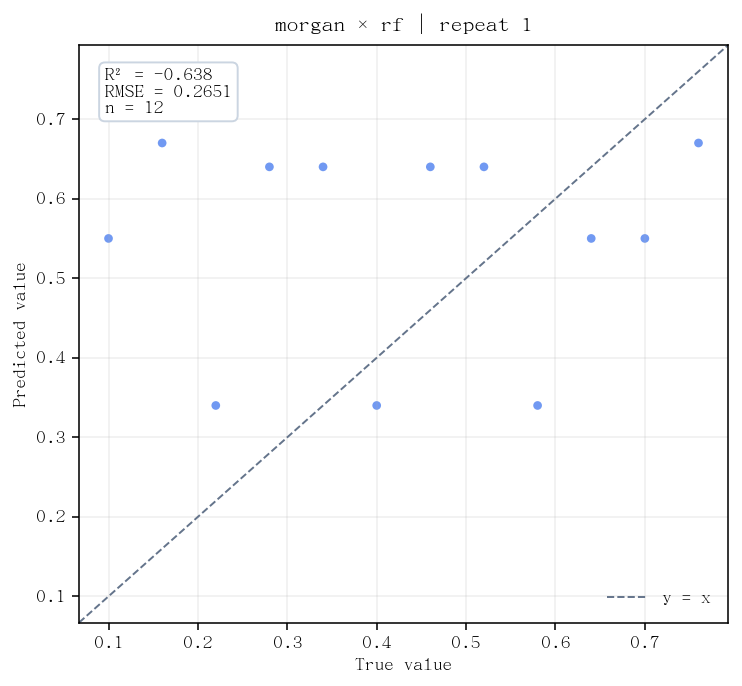
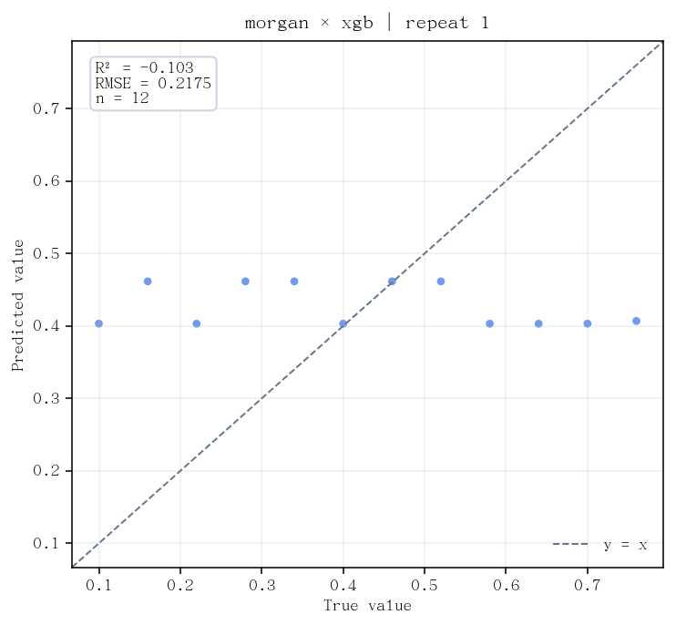
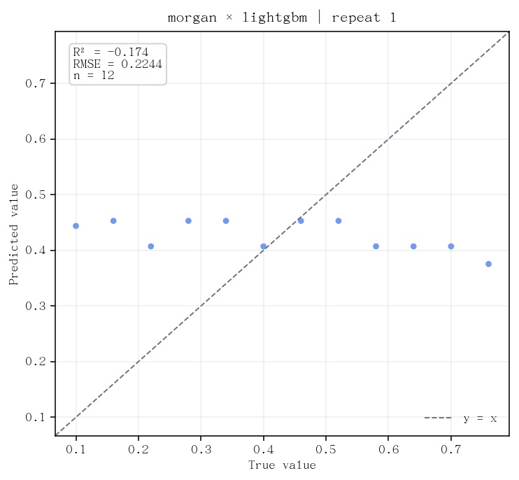

01
反应数据表一行一条反应记录，包含记录编号、两个组分的结构文本，以及教学参考产率。
下载反应数据表（CSV）按顺序看反应数据表、建模任务设置和随机分批测试，再打开已经保存的完整报告。所有示例文件都在这个文件夹里。
一行一条反应记录，包含记录编号、两个组分的结构文本，以及教学参考产率。
下载反应数据表（CSV）指定使用哪些列、怎样把结构变成数字、用什么方法，以及怎样留出数据检验。
下载设置文件（YAML）展示各方法的预测误差、逐反应预测对照和运行记录。这里保留的是历史任务的实际输出。
打开历史完整报告采用结构数值编码（Morgan descriptor），将两个分子结构文本分别转成数字，再按列顺序合并。随后使用随机森林（RF）、逐轮修正误差的树模型（XGBoost、LightGBM）进行数值预测。
反应数据表（CSV）中的 yield 是要预测的教学参考产率，不作为模型输入；两个结构文本列才是本例的输入。唯一反应编号用于把数据和预测一一对应。
| 原始列名 | 给化学研究人员的解释 | 本例用途 |
|---|---|---|
reaction_id | 反应记录编号，例如smoke-01 | 对应数据与结果；不是预测输入 |
yield | 人工给定的参考产率，按0–1保存 | 预测目标列（label） |
reactant_1_smiles | 第一个组分的分子结构文本（SMILES） | 结构编码输入 |
reactant_2_smiles | 第二个组分的结构文本；本例均为CO | 结构编码输入 |
反应编号reaction_id | 参考产率yield（0–1） | 组分1reactant_1_smiles | 组分2reactant_2_smiles | 换算为百分数 仅便于阅读 |
|---|
右侧百分数列由网页换算显示，不是下载CSV里额外的一列。数据没有按底物分组，不能据此声称检验了未见底物；CO保持不变也不构成真实化学有效性的证明。
本轮已从本目录读取run.yaml完成计算并通过逐条验收。下载包的completed_run目录保留完整输出快照；重新运行会新建本包的result目录。
这里显示本目录可直接运行的run.yaml，包含中文注释。进入本示例文件夹，激活yonod环境，通过python ../../yonod.py启动，首次提示输入run.yaml；此页面本身不启动计算。
| 关键字段 | 读成什么 |
|---|---|
stage: all | 先准备输入编码，再建立模型和检验。 |
sample_id_col | 用reaction_id对应每条记录。 |
label: yield | 要预测的是教学参考产率。 |
reactants | 两个结构文本列是允许使用的输入。 |
descriptor: morganmode: concat | 分别生成结构编码，再按固定列顺序合并。 |
models | 用三种建模方法比较，不是三批不同数据。 |
n_jobs: 19 | 声明模型计算线程预算；各方法按顺序执行。 |
hpo.enabled: false | 关闭自动比较模型设置；本例也不优化反应条件。 |
protocol: outer_kfoldn_splits: 2 | 随机分两份，轮流留一份检验。 |
shuffle: trueseed: 42 | 先打乱再划分，用42固定打乱方式。 |
n_repeats: 1 | 只做一套完整轮换，不是许多独立化学实验。 |
outputs | 指定独立任务结果目录及网页/文字报告。 |
diagnostics.enabled: false | 不另外计算已学反应效果对照；与历史报告一致。 |
这里每种树模型只用了2棵树，是原流程测试的小型设置，不应直接当作真实研究推荐参数。完整配置结构仍以YONOD根目录的example.yaml为唯一规范。
下面汇总每个方法在12条留出反应上的预测。每条预测都由没有学习过该条记录的模型给出，称为留出预测汇总（out-of-fold，OOF）。这仍是内测。
| 建模方法 | 平均相差多少 MAE（0–1） | 换算后 百分点 | 综合误差 RMSE（0–1） | 换算后 百分点 | 相对均值参照 R² |
|---|
表中数值为阅读适度取舍小数；完整精度指标CSV保留复核数值。三个方法的全部结果均保留。
平均绝对误差（MAE）把每条误差取绝对值后求平均。参考产率按0–1保存时，0.2225相当于22.25个百分点，而不是相对误差22.25%。
均方根误差（RMSE）先将误差平方、求平均，再开平方。它与目标采用同一尺度，更强调误差较大的记录。
R²比较模型与统一预测为这批测试结果均值的表现。负值表示在这个评价范围内更差，不能读成“预测正确率”。
整套内测只做了一次。原报告中的跨重复标准差为0，反映只有一套结果可汇总，不能据此声称预测稳定或没有不确定性。
这三张图来自同一历史报告，保留原始图像。横纵坐标的实验值用语在本例应读为人工教学参考值；它们不是新增实测结果。



原任务 diag215_20260929_ordinary_fixed_off_v1 的报告逐字节复制到本包，包含三个方法的得分、排序、耗时和对照图。原报告与得分保持原样；本轮新报告另存。
disabled和诊断区的complete_folds=0表示未启用已学反应效果对照，不代表三个模型建模失败。内嵌预览关闭脚本，报告中的图片和数据可离线查看；部分数学公式可能保留原始记号。新窗口打开原报告时，公式排版脚本可能需要联网。原始HTML没有改写。